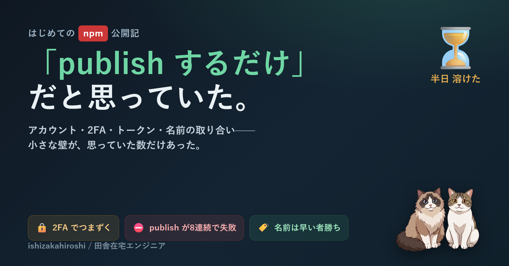

小さなツールが GitHub に並んできて、ふと「この名前、npm でも押さえておかないと誰かに先に取られるな」と思った。軽い気持ちで npm publish を叩いた。そこから半日が溶けた。レジストリとコマンドの分離、2FA、トークンの「バイパス」設定、名前の「似すぎ」判定 — 初回でつまずいた全部を、次に同じ轍を踏まないために畳んでおく。
そもそも npm という言葉に、つまずいていた。npm には二つの意味がある。ひとつはパッケージを置いておく「倉庫」（レジストリ）、もうひとつはその倉庫から取ってくる「運送会社」のコマンド。両方とも npm と呼ばれているせいで、初心者には完全に同一視されている。
運送会社の方は乗り換えがきく。pnpm でも bun でも、倉庫はひとつなので公開先は同じ。だから「npm コマンドが嫌い／苦手」を理由に公開を諦める必要はない。実際の公開コマンドは pnpm publish 1 行で完結する。
アカウントを作ると、黄色い帯が出た。「二段階認証（2FA）が未設定です」。あとでいいか、と一瞬思って、やめた。公開パッケージは、自分のアカウントが乗っ取られると、それを入れている人みんなに被害が及ぶ。2FA は自分のためというより、入れてくれる人を守るためのもの。
パスキーで設定して、ブラウザのパスワードマネージャーに保存。スマホを変えても困らない動線にして、リカバリコードも印刷して金庫に入れた。完璧、のはずだった。
そして npm publish を流したら、8 個ぜんぶ赤いエラーで止まった。
EOTP. This operation requires a one-time password.
ここからが長かった。書き込みにも 2FA を要求する設定になっていたので、「書き込みには 2FA を求めない」に変えた。チェックを外して、保存して、もう一度 publish。まだ赤い。
npm 側の設定の要約は「authorization only」と表示されている。なのに通らない。古いログインが残っているのかと思って、npm logout → npm login をやり直した。それでも、同じところで止まる。
設定の UI とコマンド側の挙動が一致しないので、何が効いているのか分からなくなる。8 個ぜんぶが同じエラーで並ぶ画面を、しばらく眺めていた。設定をいじる方向では、もう埒が明かない。
行き着いたのが、アクセストークンだった。CI や自動化のために使うトークンには、「2FA をバイパスする」というチェック項目がある。これを付けて発行し、設定ファイルに貼る。設定画面のオン・オフで右往左往するより、こちらの方がずっと確実だった。
npm_xxxxxxxx を ~/.npmrc に //registry.npmjs.org/:_authToken=npm_xxxxxxxx として貼るpnpm publish を叩く今度は緑のチェックが 7 個並んだ。+ <package>@0.0.0。声が出た。
package.json の files で物理的に外してある。名前だけ先に押さえて、実装はあとからゆっくり差し替える。仮押さえに本体を巻き込まないのは、トークンや秘匿ファイルを誤って tarball に入れない事故防止としても効く。
ほっとしたのも束の間、最後の 1 個でまた弾かれた。any-ai-cli という名前。検索しても誰も使っていない。空いている。なのに publish すると「既存の anyai-cli に似すぎ」と怒られる。
npm は名前を比べるとき、ハイフンや記号を無視する。だから any-ai-cli は内部では anyaicli という見え方になって、先にいた anyai-cli とぶつかる。試しに aimux を取ろうとしたら、今度は既存の ai-mux と同じ扱いで弾かれた。
「空いている」と「取れる」は別、ということが、ここで初めて腑に落ちた。
@<username>/any-ai-cli のように自分のスコープを付ければ、似すぎ判定は通る。スコープ名前空間は世界に 1 つ自分専用だからだ。ただ、表札なしの素の名前で配りたかったので、この 1 個は保留にした。名前は、まだ悩み中。
pnpm publish なら npm コマンドは触らなくていいfiles で巻き込まない作りにしておくどれも、終わってみれば一行で済む話。でも、その一行にたどり着くまでに、赤いエラーを何十回も見た。次に新しいツールを公開するときは、もう半日は溶かさずに済むはず — たぶん。